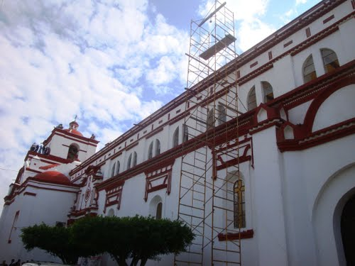
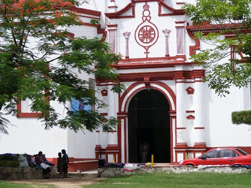
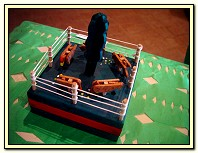
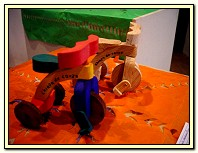
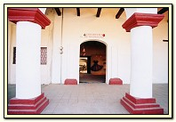

La Casa Escuela de Tradiciones es un espacio dedicado a la difusión de las técnicas artesanales, es en ella en donde se congregan las tradiciones y costumbres de la cultura chiapacorseña, es también un punto de unión para los artesanos, y canal institucional que logra la difusión y promoción del trabajo. Los talleres que se imparten, son la Laca, Máscara de Parachico, Talla en Madera, Alfarería, Bordado Tradicional y Contado. La Casa Escuela de Tradiciones es además un lugar idóneo para todos aquellos interesados en los orígenes de la cultura popular chiapacorseña, datos que pueden ser reforzados con conferencias, mesas redondas y presentaciones de músicos y danzantes autóctonos o aquellos que se dedican al rescate de lo nuestro. Una de las misiones que tiene este espacio recreativo es la de lograr una interacción recíproca entre visitantes y artesanos lo que resulta toda una experiencia cultural. En el año 2001 se realizó una restauración del edificio, concluyendo en enero del 2002, este año fue de gran relevancia para dar inicio con actividades enfocadas a la preservación de técnicas antiguas del arte popular, creando un espacio de encuentro y exposición para los artesanos Chiapanecos.
Av. Independencia 10, 29160 Chiapa de Corzo, Chiapas, México.
Salir de Tuxtla Gutiérrez y dirigirse al lado oriente de la ciudad, tomar la carretera Tuxtla Gutiérrez – Chiapa de Corzo, una vez arribando a la Ciudad de Chiapa de Corzo, incorporarse a la carretera Victórico Grajales, hasta llegar al parque central para después girar hacia la avenida independencia ubicado a una cuadra de dicho parque. El recorrido es de aproximadamente 15.5 km
En este lugar puedes disfrutar de exposiciones temporales y permanentes, además de conciertos, obras de teatro y danza. También puedes tomar cursos, talleres, seminarios e inclusive Diplomados.





posicione el mouse sobre las imágenes